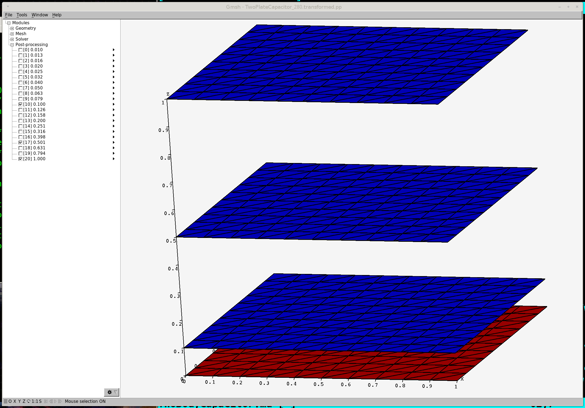
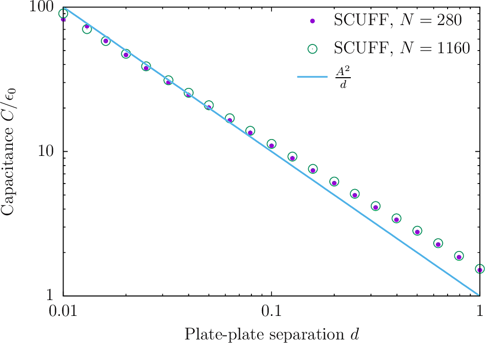
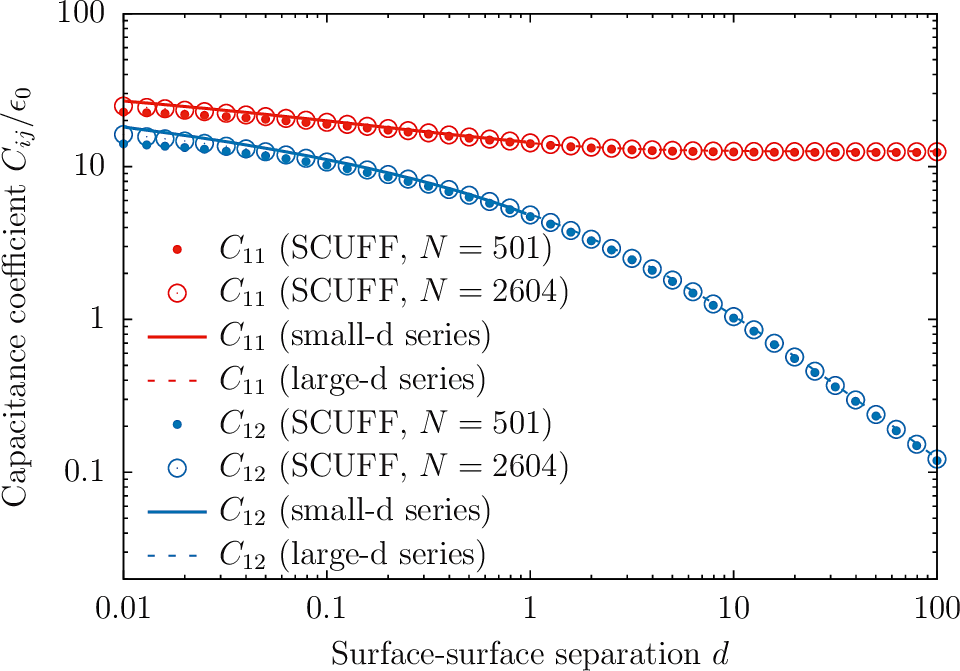

Capacitance of parallel-plate and two-sphere capacitors
In this example, we exploit scuff-em's electrostatics module to compute the capacitance of parallel-plate and two-sphere capacitors.
The files for this example may be found in the
share/scuff-em/examples/TwoBodyCapacitors subdirectory
of your scuff-em installation.
Capacitance of a parallel-plate capacitor
I consider a parallel-plate capacitor consisting of two square conducting plates of side length separated by various distances . Neglecting fringing-field (i.e. finite-size) effects, the capacitance is
Creating scuff-em input files
Because electrostatics is scale-invariant, I can choose length units arbitrarily, and I will choose units in which . To specify my geometry thus requires meshed representations of squares of side length 1, which I generate (at two different meshing resolutions) like this in gmsh:
% gmsh -setnumber N 10 -2 Square_N.geo -o Square.msh
% RenameMesh Square.msh
% gmsh -setnumber N 20 -2 Square_N.geo -o Square.msh
% RenameMesh Square.msh
Here Square_N.geo is the
gmsh input file
and RenameMesh is a little script that uses
[scuff-analyze][scuff-analyze] to
count the number of interior edges in a surface mesh and
rename the file accordingly.
This produces files named
Square_280.msh and Square_1160.msh.
Now write
scuff-em geometry files:
+TwoPlateCapacitor_280.scuffgeo
+TwoPlateCapacitor_1160.scuffgeo
and a list of geometrical transformations describing 20 values of the plate-plate spacing ranging from to :
Before running calculations, double-check that our .scuffgeo
and .trans files file correctly describe the range of geometries
we want to study:
% scuff-analyze --geometry TwoPlateCapacitor_280.scuffgeo --transfile TwoPlateCapacitor.trans
% gmsh TwoPlateCapacitor_280.transformed.pp

Running the calculation
% for N in 280 1160
% do
% ARGS=""
% ARGS="${ARGS} --geometry TwoPlateCapacitor_${N}.scuffgeo"
% ARGS="${ARGS} --TransFile TwoPlateCapacitor.trans"
% ARGS="${ARGS} --CapFile TwoPlateCapacitor_${N}.out"
% scuff-static ${ARGS}
% done
Plotting the data
% gnuplot
gnuplot> set logscale xy
gnuplot> plot 'TwoPlateCapacitor_280.out' u 1:(abs($3)) t 'SCUFF, N=280' w p pt 7 ps 1, 'TwoPlateCapacitor_1160.out' u 1:(abs($3)) t 'SCUFF, N=1160' w p pt 6 ps 2, 1/x w l lw 2 t 'Theoretical Prediction'

The deviations from the theoretical prediction at small are due to finite mesh resolution and are reduced in the finer-mesh calculation. On the other hand, the deviations at large are due to the finite size of the plates and are not changed by computing at finer resolution.
Capacitance of a two-sphere capacitor
The share/scuff-em/examples/TwoBodyCapacitors subdirectory
of your scuff-em installation also contains input files
for computing the self- and mutual capacitances of a capacitor
consisting of two conducting spheres of radius separated by a
surface-surface separation distance (center-center separation ).
Analytical formulas for the self-capacitance and mutual
capacitance for this case may be found in this paper
from 1926:
- A. Russell, "The problem of the spherical condenser", Journal of the Institution of Electrical Engineers 64 727 (1926). DOI: 10.1049/jiee-1.1926.0065
The scuff-static computation proceeds as above with new geometry and transformation files:
% for N in 501 2604
% do
% ARGS=""
% ARGS="${ARGS} --geometry TwoSphereCapacitor_${N}.scuffgeo"
% ARGS="${ARGS} --TransFile TwoSphereCapacitor.trans"
% ARGS="${ARGS} --CapFile TwoSphereCapacitor_${N}.out"
% scuff-static ${ARGS}
% done
This time we'll plot both and and compare against the large- and small- analytical formulas in the paper of Russel above.

Here's the gnuplot script I used
to make this plot: TwoSphereCapacitor.gp.